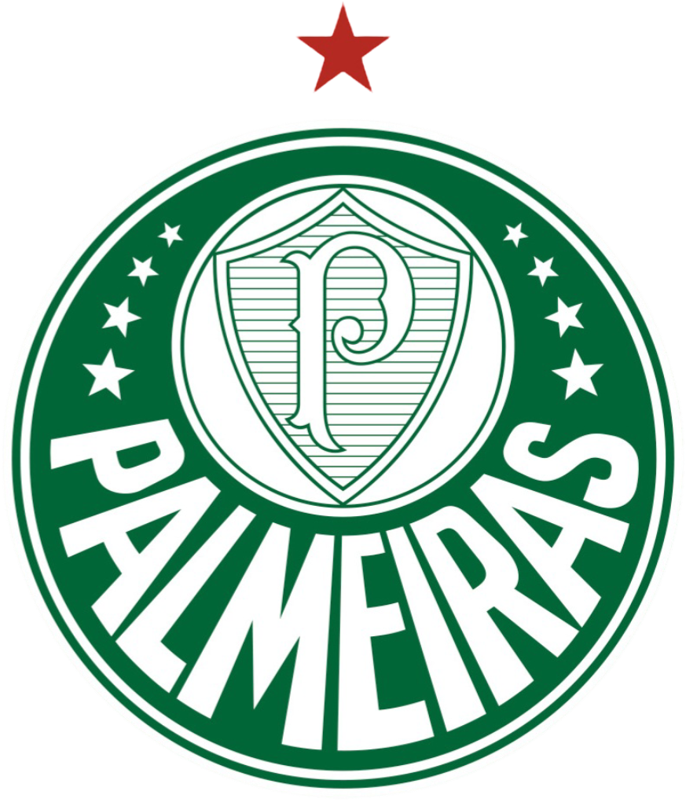

Palmeiras
Um Pouco da História do Maior Campeão do Brasil

Fundação e primeiros anos
A história do Palmeiras começou em 26 de agosto de 1914, na cidade de São Paulo. O clube foi fundado por imigrantes italianos e recebeu originalmente o nome de Palestra Italia. Desde seus primeiros anos, o clube já demonstrava grande ligação com a comunidade italiana que vivia em São Paulo.
O Palestra Italia rapidamente começou a participar de competições de futebol e conquistou seus primeiros títulos. Com o crescimento do clube, sua torcida também aumentou, fazendo com que a equipe ganhasse cada vez mais importância no futebol paulista.
A mudança de nome
Durante a Segunda Guerra Mundial, o Brasil entrou no conflito ao lado dos Aliados. Naquele período, o governo brasileiro estabeleceu restrições a organizações e símbolos relacionados aos países do Eixo, entre eles a Itália.
Por causa desse contexto, o clube precisou abandonar o nome Palestra Italia. Em 1942, passou a se chamar Sociedade Esportiva Palmeiras.
A mudança marcou uma nova etapa na história do clube. Mesmo enfrentando dificuldades, o Palmeiras continuou competindo e rapidamente construiu uma identidade própria.
O crescimento do clube
Nas décadas seguintes, o Palmeiras se consolidou como uma das principais equipes do futebol brasileiro. O clube conquistou diversos campeonatos estaduais e nacionais e passou a revelar e contratar grandes jogadores.
Um dos períodos mais importantes ficou conhecido como Primeira Academia, durante as décadas de 1960 e 1970. A equipe ficou famosa pelo futebol de qualidade e contou com jogadores importantes, como Ademir da Guia, considerado um dos maiores ídolos da história do Palmeiras.
Nesse período, o clube conquistou importantes títulos e ganhou destaque nacional e internacional.
Quando o Palmeiras foi a Seleção Brasileira
Um dos capítulos mais curiosos e importantes da história do Palmeiras aconteceu em 7 de setembro de 1965. Naquele ano, o clube vivia a época da chamada Primeira Academia, considerada uma das grandes equipes do futebol brasileiro.
Para a inauguração do Estádio Governador Magalhães Pinto, o Mineirão, em Belo Horizonte, a então CBD (Confederação Brasileira de Desportos) convidou o Palmeiras para representar oficialmente a Seleção Brasileira em um amistoso contra o Uruguai.
A situação foi histórica: pela primeira vez, uma equipe inteira de clube foi responsável por representar o Brasil. Não foram apenas os jogadores titulares. A delegação era formada pelo elenco do Palmeiras, incluindo reservas, comissão técnica e outros profissionais. O treinador era o argentino Filpo Núñez.
Vestindo a tradicional camisa amarela da Seleção, o Palmeiras enfrentou um forte time uruguaio e venceu por 3 a 0. Os gols foram marcados por Rinaldo, Tupãzinho e Germano.
Entre os jogadores que participaram daquela partida estavam grandes nomes da história do clube, como Djalma Santos, Djalma Dias, Dudu, Ademir da Guia, Julinho Botelho, Servílio e Rinaldo.
A vitória ficou marcada como um dos momentos mais especiais da história alviverde. O Palmeiras não apenas inaugurou o Mineirão representando o Brasil, como também conquistou a chamada Taça Independência Brasil-Uruguai. Até hoje, esse episódio é lembrado como uma das maiores honras recebidas pelo clube.
A Libertadores de 1999
Depois de décadas de grandes conquistas, um dos momentos mais marcantes da história recente aconteceu em 1999.
O Palmeiras chegou à final da Copa Libertadores da América contra o Deportivo Cali, da Colômbia. Depois de dois jogos equilibrados, o título foi decidido nos pênaltis, com o Palmeiras conquistando sua primeira Libertadores.
A conquista entrou para a história do clube e se tornou um dos momentos mais lembrados pelos torcedores.
Uma história construída com títulos
Ao longo de sua história, o Palmeiras acumulou conquistas em diferentes épocas. O clube ganhou importantes campeonatos estaduais, nacionais e internacionais, passando por gerações como a Primeira e a Segunda Academia e chegando às equipes que marcaram o futebol brasileiro nas décadas seguintes.
Nos anos mais recentes, o Palmeiras voltou a viver uma sequência de grandes conquistas. A equipe venceu a Copa do Brasil de 2015, o Campeonato Brasileiro de 2016 e 2018, a Copa Libertadores de 2020, a Copa do Brasil de 2020, a Copa Libertadores de 2021, a Recopa Sul-Americana de 2022, o Campeonato Paulista de 2020, 2022, 2023, 2024 e 2026 além dos Campeonatos Brasileiros de 2022 e 2023 e da Supercopa do Brasil de 2023.
Essa geração também ficou marcada por uma forte presença de jogadores formados nas categorias de base do clube. Atletas como Endrick e Estêvão ganharam destaque nacional e internacional, enquanto jogadores como Weverton, Raphael Veiga e Rony também tiveram participação importante nesse período.
Assim, a história do Palmeiras continua sendo construída por diferentes gerações. Desde os primeiros anos do Palestra Italia, passando pelo histórico dia em que o clube representou a Seleção Brasileira no Mineirão, até a atualidade, o Verdão acumulou títulos, grandes jogadores e momentos que fazem parte da história do futebol brasileiro.